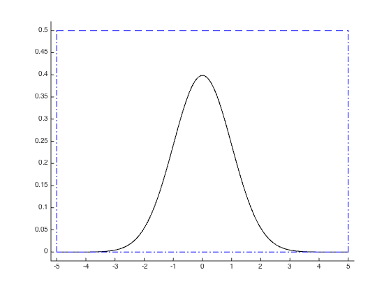

function [] = example2_monte_carlo() figure; % Allow overlapping multiple plots on the same figure. hold on; % 100 equally spaced samples in [-5, 5]. x = linspace(-5, 5, 100); % Plot function to be integrated. plot(x, f(x), 'k'); % Plot region to be integrated over. plot(xlim, [0 0], 'b-.') plot(xlim, [0.5 0.5], 'b--') plot([-5 -5], ylim, 'b-.') plot([5 5], ylim, 'b-.') % Adjust axes xlim([-5.2 5.2]); ylim([-0.02 0.52]); % Number of Monte Carlo steps. N = 10^5; % First compute integral using a for loop. 'toc' will return the % elapsed time since a call to 'tic' tic; hits = 0; for i=1:N hits = hits + simulate_pt(); end for_estimate = hits/N*(0.5*10) toc; % Rewritting the operation in a vectorial fashion will significantly % speed up its execution. tic; vectorised_estimate = sum(unifrnd(0, 0.5, N, 1) < f(unifrnd(-5, 5, N, 1)))/N*(0.5*10) toc; % Create a parallel pool of 4 workers. pool = parpool(4); % If executed when a pararell pool of workers is available, parfor will % distribute the iterations of the loop among the available workers. % % MATLAB identifies hits as being a reduction variable and gets the % correct value at the end of the parfor despite the concurrent % execution. Note that this wouldn't work with examples such as % computing a Fibonacci sequence. tic; hits = 0; parfor i=1:N hits = hits + simulate_pt(); end parfor_estimate = hits/N*(0.5*10) toc; % Run the parfor loop a second time and notice the decrease in % execution time. There seems to be some startup cost associated with % the first execution of parfor after creating a pool. tic; hits = 0; parfor i=1:N hits = hits + simulate_pt(); end parfor_estimate_bis = hits/N*(0.5*10) toc; % Close parallel pool. delete(pool); end function [ret] = f(u) % It is important to use .^ rather than ^ so that the exponentiation is % done element-wise if the function is called with a vector as input. ret = exp(-u.^2/2)/sqrt(2*pi); end function [ret] = simulate_pt() % Draw a random location within the search space and return whether it % is located under the curve defined by function f(x) or not. rand_x = unifrnd(-5, 5); rand_y = unifrnd(0, 0.5); ret = rand_y < f(rand_x); end
for_estimate =
0.9979
Elapsed time is 6.694048 seconds.
vectorised_estimate =
1.0056
Elapsed time is 0.007355 seconds.
Starting parallel pool (parpool) using the 'local' profile ... connected to 4 workers.
parfor_estimate =
1.0055
Elapsed time is 4.117180 seconds.
parfor_estimate_bis =
1.0053
Elapsed time is 2.091018 seconds.
Parallel pool using the 'local' profile is shutting down.
